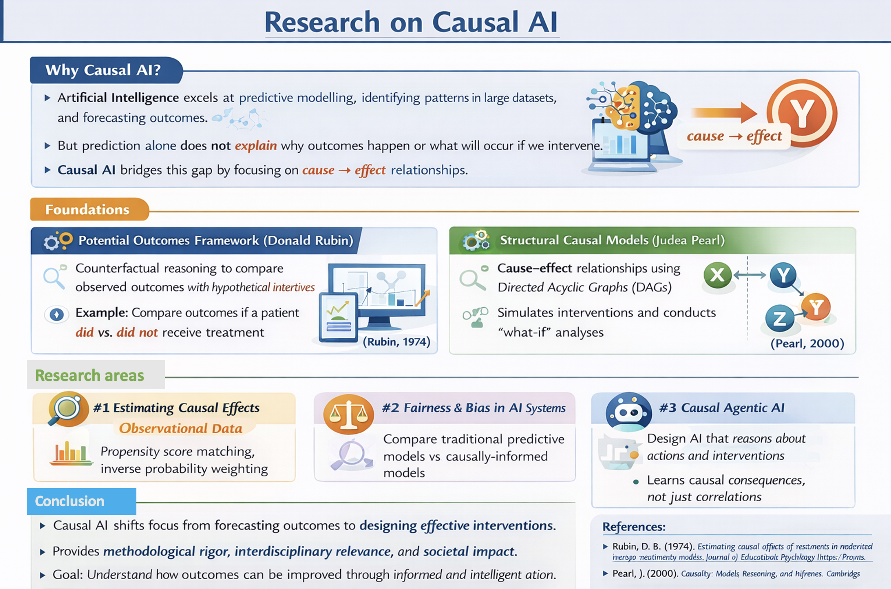

Researchers
Prof. A. Bekker
Data is full of surprises, and I’m here to uncover them. I focus on modern statistical challenges and building tools that make a real impact. If you’re eager to learn by doing, tackle interesting problems, and have fun along the way, you’ll feel at home in our D.A.T.A. research group.
Dr. L. Chaka
Mrs. L.E. Coetser
My research interests are in statistics in education. I have two projects available within this field for 2026.
Dr. G. Crafford
My ResearchGate profile is available here.
Dr. R. Ehlers
My profile is available here.
Prof. I.N. Fabris-Rotelli
My research areas are Spatial Statistics, Image Processing and Remote Sensing with applications in Epidemiology and Criminology, and accessibility through Spatial Linear Network modelling. My Google Scholar is available here. I am part of the SpatialLab@UP research group.
Mr. A. Gqwaka
My research interests focus on efficiency and productivity analysis, particularly stochastic frontier analysis (SFA). I am interested in simulation-based econometric methods, especially Monte Carlo approaches, and their application to evaluating performance in sectors such as municipal service provision.
Ms. P.H.G. Jafta
Prof. F.H.J. Kanfer
My research interests have been shaped by analytical challenges encountered during industry consultation projects. Practical questions arising from these engagements have informed the formulation of statistical research problems and guided my academic inquiry. For example, during a consultation project within the banking sector, I participated in the development of credit scoring models aimed at assessing clients’ credit risk. Business stakeholders were particularly interested in identifying the market segments underlying variations in risk behaviour. This practical question inspired my research focus on integrating unsupervised and supervised statistical learning approaches, specifically through the combination of mixture distributions model with a mixture of regressions model. The projects I listed explore some of these concepts and their applications.
Dr. J. Kleyn
My research interest are in shrinkage and regularization methods for statistical models. Please see my webpage here.
Mr. A.R. Kleynhans
The core of my research is model based clustering. I am particularly interested in robust statistics, developing methods that remain reliable when data violate assumptions or contain outliers. I also work on variable and order selection in model-based clustering: identifying how many groups are present in the data and which variables are most informative for clustering.
Dr. B. Mac’Oduol
My research lies at the intersection of distribution theory, survival analysis, and biostatistics, with an aim of contributing to the theoretical development of parametric distributions, including derivation of structural properties and inferential. Building on this foundation, my current research extends distributional modelling into survival and intermittent processes. More recently, my work incorporates machine learning methods for survival data, with an emphasis on interpretability and the integration of classical statistical theory with modern predictive modelling frameworks. The broader aim is to develop principled, distribution-aware approaches to risk prediction in biostatistical applications. My research profile and published works can be seen here.
Dr. K. Mahloromela
My research area focuses on spatial and directional statistics, with applications in criminology, epidemiology, ecology, and human demography. Most of my work involves developing statistical methodology to address real-world problems in spatial modelling and prediction. My Google Scholar is available here. I am part of the SpatialLab@UP research group.
Dr. S.L. Makgai
My research interest is primarily in distribution theory and directional statistics, with applications to compositional data, financial and insurance data, protein angle data and other biological systems. I am interested in developing statistically models that can handle non-standard data—such as angular, or structured datasets—and translating these into practical tools for bioinformatics, health research, and quantitative finance (see my Google Scholar profile here). Students who work with me typically engage in projects that balance theory and application, with a strong emphasis on methodological clarity, solid inference, and problems that have clear real-world relevance.
Dr. M.J.C. Malela
Prof. S. Manda
My profile is available here.
Prof. S.M. Millard
My main research focus in the area of clustering. This includes model-based clustering (MBC@UP) and other forms of clustering. My research includes various developments in model-based clustering including mixture modelling and mixture regression. Many real-world datasets contain heterogeneous subpopulations that cannot be adequately described by a single statistical model. In industry, such heterogeneity arises in customer segmentation, credit risk profiling, insurance portfolio classification, and biological data analysis. Model-based clustering, particularly through Gaussian mixture models and Gaussian mixture regression, provides a principled probabilistic framework for identifying latent group structures while accounting for uncertainty in cluster membership. In addition, I also have an interest in partition based clustering and hierarchical clustering.
Dr. N. Nakhaeirad
My research focuses on three main areas: directional statistics, biostatistics, and machine learning. In relation to the proposed topics, my work in directional statistics specifically emphasises the development of new methodology for circular, cylindrical, and toroidal data. My research advances statistical theory and computation for complex periodic observations, such as wind direction, solar orientation, protein dihedral angles, and turning angles in animal movement, to support practical solutions in renewable energy, public health (computational biology and protein structure validation), and wildlife conservation and tourism. I lead two research groups at the University of Pretoria: AdvDS@UP: Advances in Directional Statistics, and ML4HS@UP: Machine learning for health sciences. My Google Scholar profile is available here.
Dr. A.F. Otto
I work on statistics for the real world — the kind where data are messy, assumptions break, and neat textbook models just don’t cut it. My research spans robust statistics, clustering, distribution theory, and directional data, with a focus on building methods that stay reliable even when things go sideways. I form part of the D.A.T.A. research group and have 3 project ideas for 2026.
Mr. J. Pillay
It does not matter whether you end up in a corporate job, private research, or in academia, for incomplete data will always plague you. My focus turns a plague into your hidden superpower (pun intended). Modelling data with missing values at the intersection of distribution theory, algorithmic design and clustering is the core of my research field. If you enjoy problem-solving, coding, and what goes on behind the polished algorithms that fill in the gaps, my projects, and my research group D.A.T.A. might be the perfect fit for you.
Dr. S.B. Skhosana
My research interests lie at the intersection of probabilistic modelling (mixture modelling), computational statistics and machine learning for regression analysis, model-based clustering and classification. I am mostly interested in developing flexible probabilistic models to address complex latent data problems arising in applied domains such as environmental economics, renewable energy, health and finance. My Google scholar profile is available here. I am a principal member of the research groups AdvDS@UP: Advances in Directional Statistics, ML4HS@UP: Machine learning for health sciences and MBC@UP: Model based clustering.
Dr. A. Smit
My research areas focus on geostatistics with applications in environmental processes including geological and meteorological processes. This type of modelling can incorporate distribution theory, spatial and spatio-temporal statistics, and extreme value theory. My Google Scholar is available here. I am part of the SpatialLab@UP research group.
Dr. R. Stander
My research interests include Spatial Statistics, Spatial Hotspot Detection and Spatial Similarity, with applications in epidemiology and criminology. My Google Scholar is available here. I am part of the SpatialLab@UP research group.
Dr. R.N. Thiede
My research interests include Spatial Statistics, Spatial Networks, and Accessibility Analyses, with applications in analysing road networks and urban systems. My research focuses on developing statistical methodology to solve real-world problems, in line with UN SDGs 9 and 11. My Google Scholar is available here. I am part of the SpatialLab@UP research group.
Dr. A. van der Merwe
My research lies in the development and application of statistical models for dependent data. My most recent primary interests include skewed error distributions, integer-valued time series, overdispersed count processes, and thinning-based models. My publications can be viewed here.
Prof. J. van Niekerk
My research areas are Bayesian methods, Biostatistics, Spatial Statistics and Computational Statistics. Most of my work has been at the intersection between statistical methods and the computing of those methods. I am a developer of three R packages; INLA, INLAjoint and graphpcor. My Google Scholar is available here. I have projects available but also get excited by your project ideas - so feel free to bring your own!
Dr. P.J. van Staden
Currently the research area I focus on is Statistics in Sport and Sports Analytics. See this document for full details. I have four Honours research projects available. Note that, where possible, I will gladly adjust the scope of any of these projects based on my Honours students’ ideas and interests. You are also welcome to have a look at my research profile on Google Scholar, here.
Dr. A. Whata
I work on causal AI. My Google Scholar is available here.
